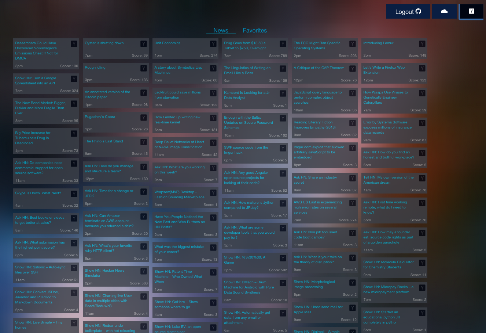

Swiss Army App
This post is filed under PROJECTS
|||
Published SEPTEMBER 2015

SWA is a client side app for reading and archiving Y-Combinator’s Hacker News articles. Built with AngularJS, UI-Router, Firebase, and Foundation. Exposed low level deferred/promise APIs using AngularJS $http service. And like any good NSS build, it’s also a weather app.
Swiss Army App Demo
Swiss Army App Code